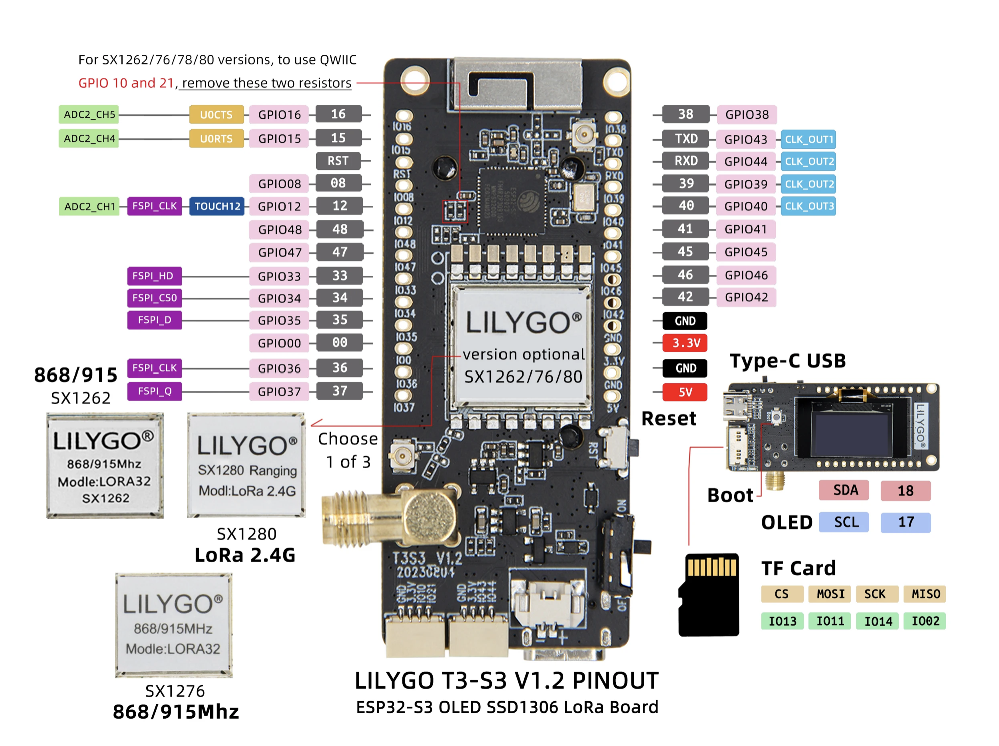
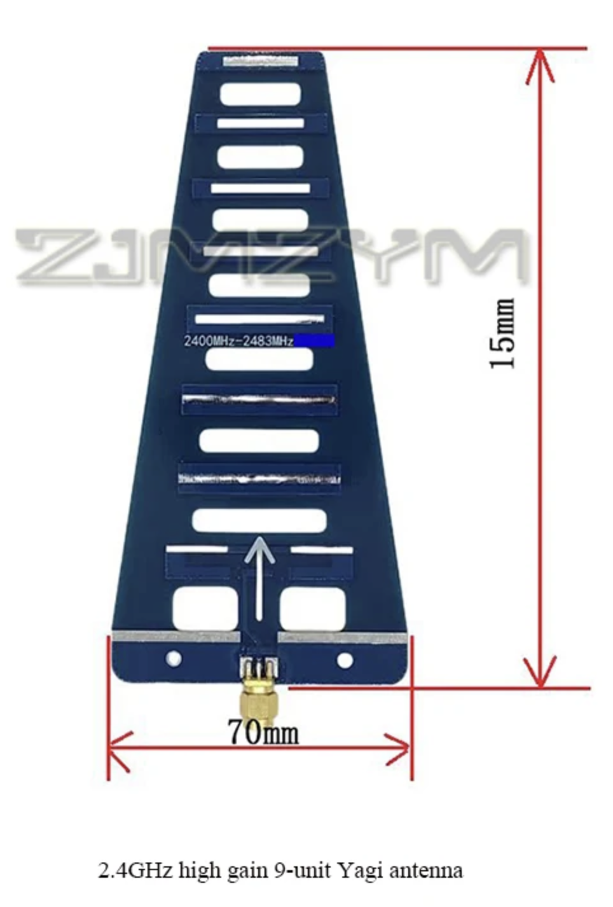
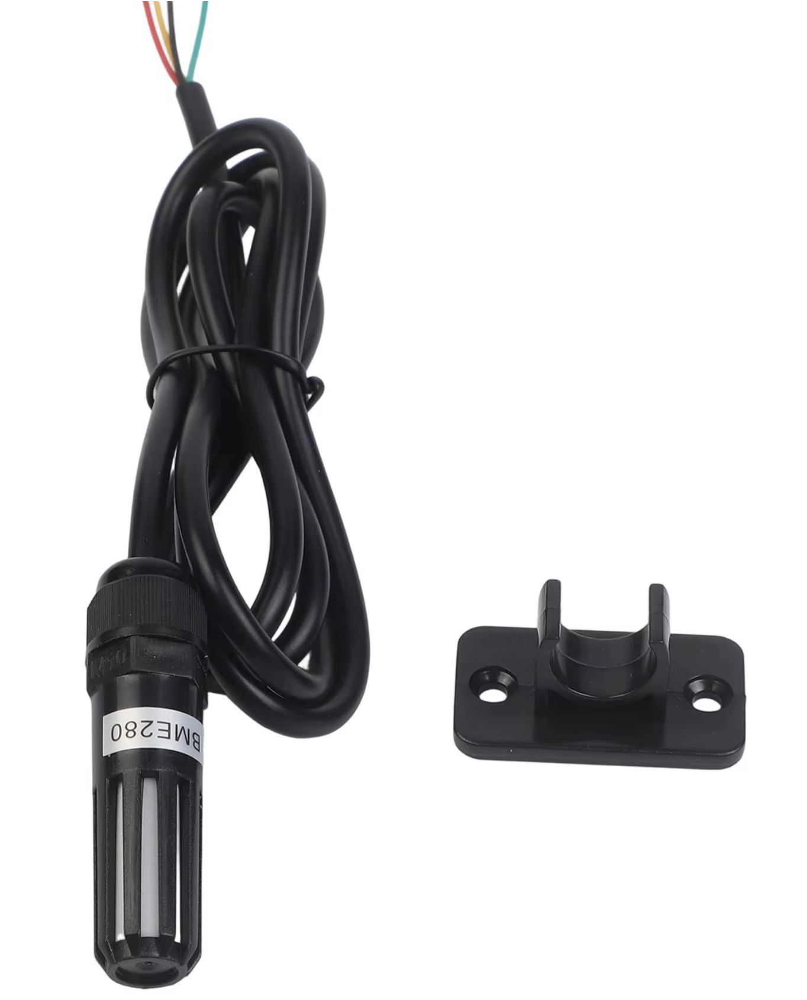
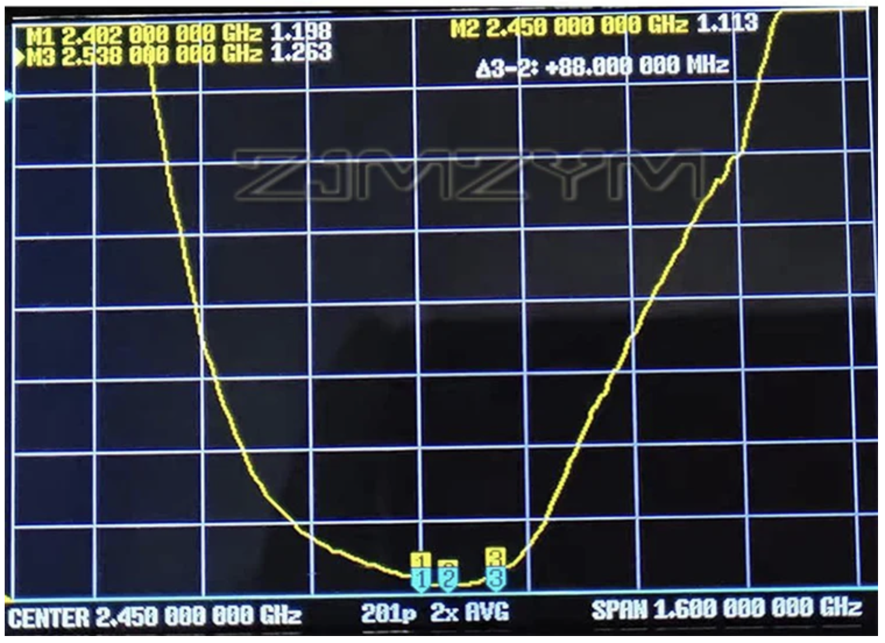
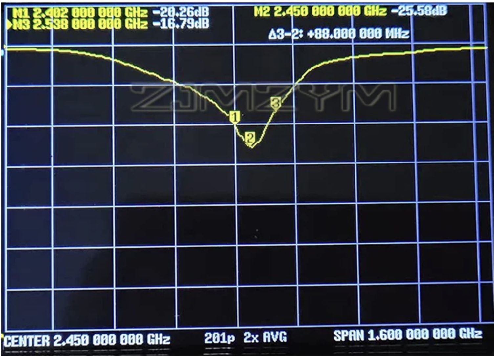
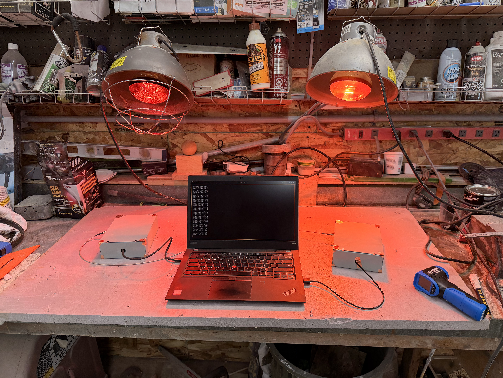
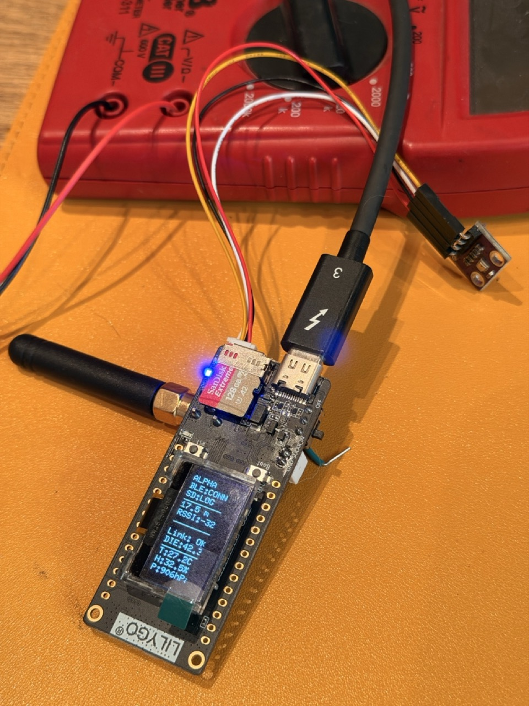

What It Does
Two SX1280 radio nodes measure the straight-line distance between them via round-trip time-of-flight ranging. One node acts as the initiator — it sends ranging requests and computes the distance result. The other is the responder, which the SX1280's hardware ranging engine handles automatically with no firmware timing involvement. Both sites are fixed; one sits on a mountaintop for unobstructed line of sight to the other.
Calibration will be done at known distance and confirmed via a variety of local landmarks and externally measured points; methodology still to be determined. GPS co-ordinates will not be used in any way for distance, as the attempt is to obtain projection-agnostic distance based on physical principles rather than lights in the sky.
Hardware (per site — two identical builds)



Antenna — VNA Measurements
Both traces centered at 2.450 GHz, 1.600 GHz span. The antenna is well-matched across the full 2.40–2.49 GHz ISM band.


Radio Configuration
| Parameter | Value |
|---|---|
| Chip | Semtech SX1280 (2.4 GHz LoRa ranging) |
| Frequency | 2450 MHz (2.4 GHz ISM band) |
| Bandwidth | 1625 kHz — widest available, best distance resolution |
| Spreading factor | SF9–SF10 (link margin is plentiful) |
| Output power | 13 dBm (SX1280 chip maximum) |
| Roles | One initiator, one responder — identical RF parameters required |
| Calibration | Known GPS site coordinates → computed great-circle distance as reference |
| Atmospheric model | GRIN tropospheric delay from BME280 P/T/RH readings |
Link Budget — 60 km
Power — 12 V Battery to 5 V (Field / Solar Site)
The T3-S3 runs from 5 V (USB / 5 V input) and regulates to 3.3 V on-board. At a solar or battery site the source is 12 VDC, requiring a DC-DC conversion stage.
| Approach | Notes |
|---|---|
| RECOM R-78E5.0-1.0 (recommended) | Drop-in sealed switching module, high efficiency, low noise, 1 A. One part, no tuning. |
| Quality buck (e.g. Pololu D24V10F5) | Pre-filtered, cleaner than bare MP1584 boards. Add output decoupling caps. |
| Buck → LDO two-stage | Buck does the efficient heavy lifting; LDO scrubs switching ripple. Cleanest rail. |
Whichever converter: add 100 µF electrolytic ∥ 0.1 µF ceramic at both input and output. The T3-S3's onboard LiPo charger provides a free UPS — a small LiPo trickle-charges from the regulated 5 V rail and carries the node through cloudy spells or brief battery dips.
3.3 V Direct — Bench / Low-Power Field Build
A regulated 3.3 V buck converter can feed the T3-S3's 3V3 header pin directly, bypassing the onboard LDO entirely. The same rail powers the BME280 sensor. A JST-2 connector on the buck output makes field connection clean and reversible.
| Connection | Detail |
|---|---|
| 3V3 buck (+) → T3-S3 3V3 header pin | Bypasses onboard LDO. Buck becomes the system regulator — must supply ≥ 500 mA peak. |
| 3V3 buck (+) → BME280 VCC & CSB | CSB tied high keeps BME280 in I²C mode. |
| GND → T3-S3 GND, BME280 GND & SDO | SDO to GND sets I²C address 0x76. |
BME280 Wiring
The BME280 shares the T3-S3's onboard I²C bus (hardwired to SDA = GPIO 18, SCL = GPIO 17). Both the OLED display and BME280 sit on the same two wires; I²C addressing keeps them separate (OLED 0x3C, BME280 0x76).
| BME280 pin | T3-S3 connection | Notes |
|---|---|---|
| VCC | 3V3 header pin (or 3V3 rail) | |
| GND | GND | |
| SDA | GPIO 18 | Shared with OLED |
| SCL | GPIO 17 | Shared with OLED |
| SDO | GND | Sets I²C address 0x76 |
| CSB | 3V3 | Holds device in I²C mode |
Temperature Characterisation & Calibration
The SX1280 ranging result drifts with temperature. Before field deployment the system underwent two dedicated laboratory procedures: a thermal characterisation run to quantify and correct for this drift, followed by a bench calibration at known distance to lock in the hardware calibration register.


Step 1 — Operation Icebox: Thermal Characterisation
Both nodes were subjected to a controlled cold-to-hot thermal cycle while logging ranging results and BME280 ambient temperature continuously. The sequence was: cold soak (fridge, ~4 °C ambient, stabilised 15 min) → heat-lamp phase (two infrared lamps, up to 34 °C ambient) → natural cool-down to room temperature. Alpha and Chimp were heated simultaneously; Chimp was pulled early when die temperature hit 50 °C.
Linear regression of ranging result vs BME280 ambient temperature yielded a coefficient of +0.0665 m/°C (R² = 0.16). The low R² reflects the high per-sample noise of the ranging engine rather than a poor fit — the per-bin trend is visually clear. Both die temperature and ambient temperature were evaluated; ambient (BME280) gave a tighter and more physically interpretable correction since it tracks the RF environment rather than CPU self-heating.
This correction is applied in real-time in the production firmware:
| Constant | Value | Meaning |
|---|---|---|
| TEMP_COEFF | +0.0665 m/°C | Ranging drift per degree of BME ambient change |
| CAL_AMB_C | 26.2 °C | BME ambient at calibration time — correction is zero at this temperature |
For every ALPHA output line: corrected = median − 0.0665 × (bme_amb − 26.2).
Both the raw median and the corrected distance are logged to SD, BLE, and serial so the
correction can be validated post-hoc.
Step 2 — Bench Calibration at Known Distance
Per AN1200.29, the SX1280 calibration register must be set with the radio operating at the exact same TX power, frequency, bandwidth, and spreading factor as production. The bench reference path was: 40 dB attenuator → 1 m RG-316 coax → 40 dB attenuator, giving an electrical path length of 0.695 m (velocity factor 0.695, MIL-DTL-17 spec). TX power was fixed at +13 dBm to match production; the 80 dB total attenuation places the received signal at approximately −27 dBm, well within the linear range.
The master node ran 500-sample SPACE-triggered bursts. For each burst the mean, σ, and
CalVal are computed: CalVal = (mean − 0.695) / 0.1803, where 0.1803 m is
the distance resolution per ranging count. The calibration table entry CAL_TABLE[2][4]
(SF9, BW 1625 kHz) was adjusted iteratively until CalVal converged to zero.
| Run | Mean (m) | CalVal | σ (m) | Outliers | Status |
|---|---|---|---|---|---|
| 1 | 0.2934 | −2 | 0.619 | 0 | Valid |
| 2 | 0.8915 | +1 | 0.681 | 0 | Valid |
| 3 | 0.7967 | +1 | 0.538 | 0 | Valid |
| 4 | 0.6192 | 0 | 0.525 | 22 | Valid (outliers at −44.7 m, caught) |
| 5 | −0.042 | −4 | 4.016 | 0 | Invalid — −18.46 m error values inside old ±20 m gate |
| 6 | 0.6379 | 0 | 0.746 | 22 | Valid (outliers at −25.3 m, caught) |
| Avg | 0.648 | 0 | — | — | Runs 1–4, 6 |
Per-sample σ of 0.5–0.7 m is expected at +13 dBm in a bench near-field setup (3× higher than at −18 dBm) — the ranging engine is designed for far-field use. The multi-run averaging approach compensates: with 500 samples the standard error of the mean is σ/√500 ≈ 25–30 mm, giving a well-determined calibration point.
Static Range Measurement Procedure
With both Alpha and Chimp static at known reference sites, a survey-grade static measurement session replaces the calibration burst. The production firmware logs every ALPHA line to the SD card continuously. For a proper baseline:
| Session length | Approx. samples | Mean σ |
|---|---|---|
| 10 minutes | ~120 | ~55 mm |
| 30 minutes | ~360 | ~32 mm |
| 60 minutes | ~720 | ~23 mm |
Pull the SD CSV after the session and compute mean(dist_m) over all rows
(or raw_m if you want uncorrected). The 5-sample rolling median already
displayed on the OLED is a real-time quality check, not a survey result — use the
logged mean. A 500-sample calibration-style burst is also a clean option if you want
a quick spot-check rather than a long session; the calibration firmware can be re-used
at any reference distance for this purpose.
Installation Notes
| Topic | Detail |
|---|---|
| Polarization | Both Yagis must share the same element orientation (both vertical or both horizontal). A 90° mismatch costs ~20 dB. |
| Aiming | E-plane beamwidth is 48° — ±24° within 3 dB. Pre-aim by GPS great-circle bearing, correcting ~14–15° E magnetic declination in eastern BC. Fine-peak on live RSSI readout. |
| Fresnel clearance | Verify path profile clears terrain at the midpoint with room for the ~40 m first Fresnel zone plus ~50 m Earth bulge over 60 km. Run HeyWhatsThat or RadioMobile before deploying. |
| Enclosure | IP65 plastic (RF-transparent) box. Weatherproof the SMA joint. Add surge arrestor and ground strap if mounting on a metal mast at height. |
| Diagnostics | Low RSSI despite good aim → rotate one antenna 90° (polarization check). Still low → verify Fresnel / Earth bulge clearance before adjusting RF settings. |